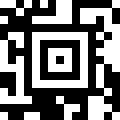
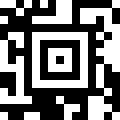
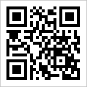
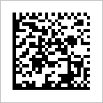
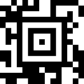
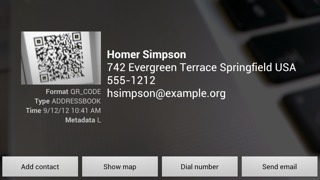

Barcode Scanner permet aussi de lire les codes barres à deux dimensions, comme les codes QR et les codes Data Matrix. Par exemple, les codes ci-dessous contiennent un lien hypertexte vers la page d'accueil du projet ZXing :



Il est également possible de fournir des informations de contact dans un code QR, et le mettre sur une carte de visite ou un site Web. Lorsque vous scannez, l'écran de résultat fournit un choix d'actions :

En plus d'une URL ou d'informations de contact, les codes QR peuvent aussi contenir :